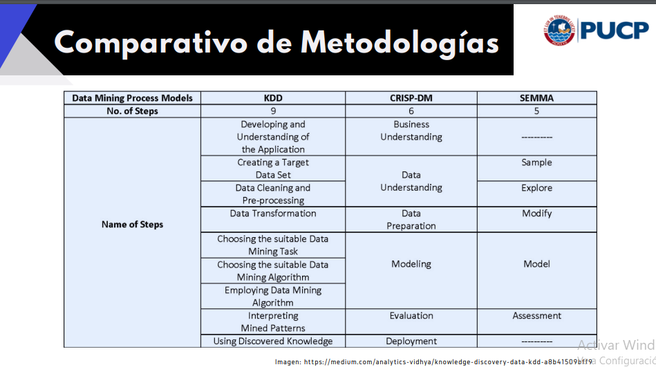

Semana 03/28
- Step 4
- Data reduction and projection.
- Using methods to reduce the number of variables.
- Análisis factorial
- Análisis por componentes
- Etc
- Step 5
- Resumir, clasificar, regresión, etc, para las variables.
- Step 6
- Choosing the data mining algorithms
- Se recomienda establecer mínimo tres modelos para poder compararlos tras su funcionamiento.
- No escoger solo un módelo.
- Step 7
- Data mining: Buscando patrones de interés
- Step 8
- Identificar e interpretar los patrones encontrados.
- La primera identificación es matemática/numérica/estadística.
- Step 9
- Combinar la interpretación numérica del paso 8 junto a la expertise sobre el negocio, con el fin de poder darle utilidad a lo hallado.
Otras metodologías
Step 1: “Entendimiento del negocio”
Describir problema o situación a analizar
- El problema debe expresar una relación entre dos o más variables.
- Debe estar formulado claramente, sin ambigüedad, como pregunta.
- Debe implicar la posiblidad de realizar una prueba empírica o una recolección de datos.
Definir los objetivos
¿Qué se desea lograr?
¿Cómo ayudará al negocio?
Principales áreas interesadas
Otros objetivos a tener en cuenta.
¿Qué características debe tener para ser considerado factible?
¿Qué esperan recibir?
¿Cómo están pensando utilizar el resultado del análisis de datos?
¿Con cuánto tiempo contamos?
Objetivos de analisis de datos
- Traducir los objetivos del negocio en objetivos para el análisis.
- Establecer las métricas o criterios de evaluación de resultados, que serán útiles para el negocio.
- Diseñar un Plan de Análisis de Datos , considerando tiempos, hitos de desarrollo, responsables y fechas para presentación de avances.
- Validar cada paso con el negocio.
Delimitar la población de análisis
- La delimitación principal es en espacio y tiempo.
- Uso de los siguientes criterios:
- Caso retrospectivo:
- Inclusión: Características que deben reunir las unidades de observación.
- Exclusión: Características que deben estar ausentes en las unidades de observación.
- Caso prospectivo:
- Eliminación: Son aquellas características que aparecen una vez que ya han sido selecctionadas las unidades de observación (surgen en la medida que se realiza el análisis)
- Caso retrospectivo:
Identificar recursos necesarios
- Personas
- Experto del negocio
- Líder analítico del proyecto
- Equipo especialista de analistas de datos
- Equipo de accesso e ingeniería de datos
- Datos
- Identificar fuentes y dueños de los datos
- Preguntar por la calidad de datos por recibir
- ¿Cómo se recolectaron los datos?
- ¿Cómo se guardaron los datos?
- ¿Cómo se llenó la tabla de datos?
- Herramientas
- Softwares disponibles (libres o con licencia)
- Entorno para selección y preprocesamiento
- Entorno para entrenamiento de modelos
- Entorno para despliegue de modelos
Identificar limitaciones
- Limitaciones del negocio
- Posibles restricciones de capacidad operativa
- Poder de acción para utilizar los resultados
- Normativas de la institución o empresa
- Limitaciones respecto a datos
- Si tendremos acceso a todos los datos
- ¿Se tendrá acceso a toda la población definida?
- Accesso para que el modelo pueda ser usado por los usuarios relevantes
- Limitaciones respecto al tiempo
- Restricciones en el tiempo de análisis
- Tiempo para el despliegue del modelo
Output del paso 1: Ficha técnica del proyecto de análisis de datos
- Archivo en Paideia
- Las partes
roleyareano serán necesario llenarlas. - Problemática
- Colocar como pregunta, tipo, “¿Se puede blah …?”
- Importante plasmar las limitaciones.
- Acciones de negocio con los resultados
- Cómo van a desplegar el modelo creado
- Las partes